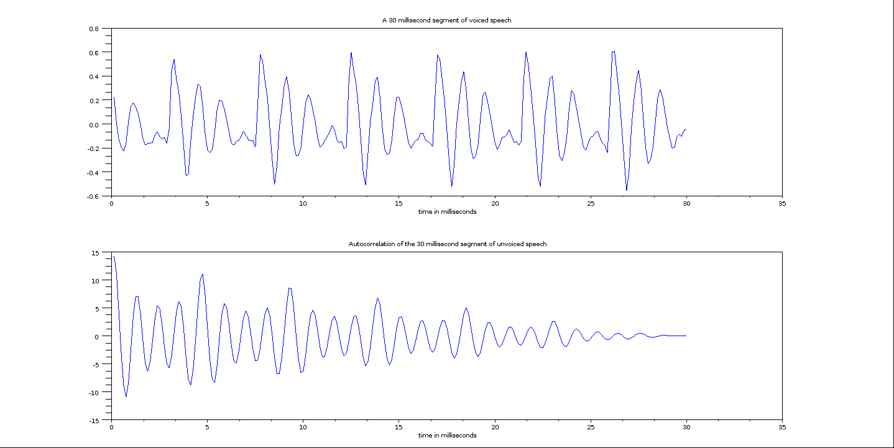
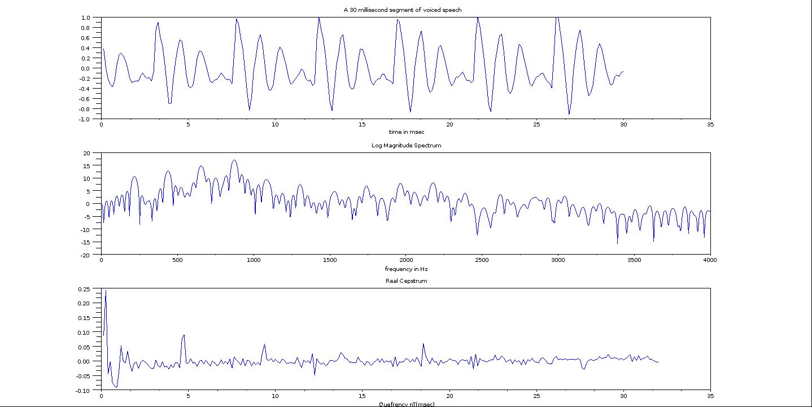
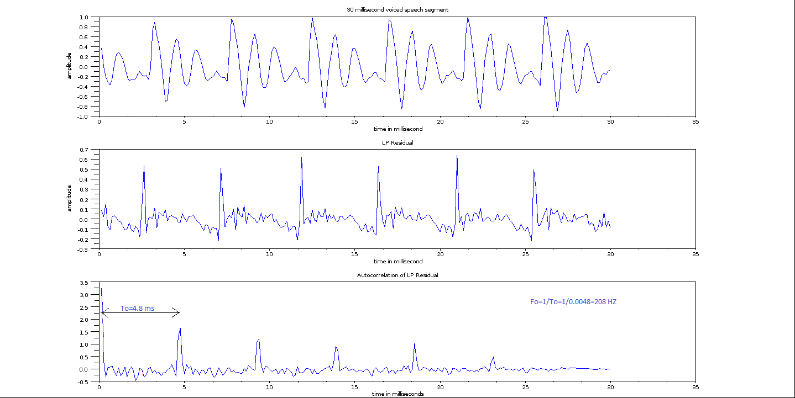
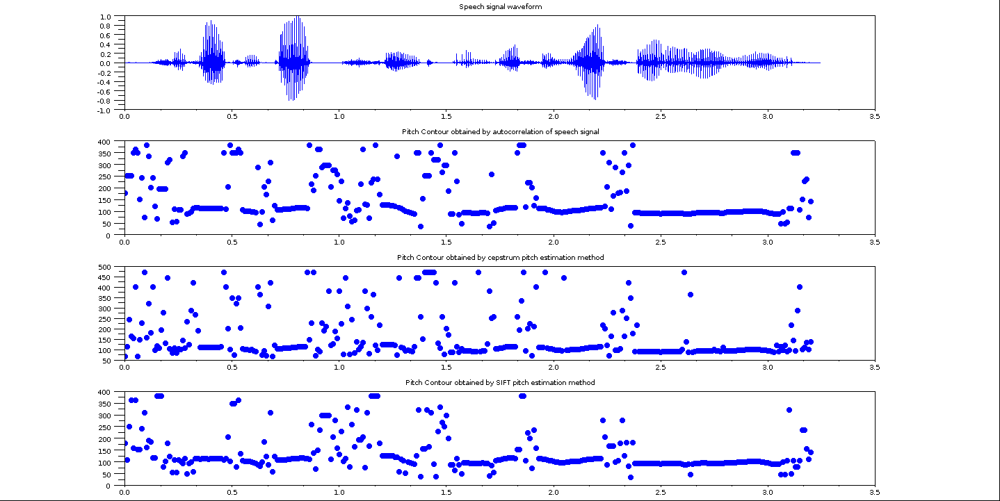

Shakshat Virtual Lab 
INDIAN INSTITUTE OF TECHNOLOGY GUWAHATI
Procedure
Pitch estimation by autocorrelation method
Speech signal can be classified into voiced, unvoiced and silence regions. The near periodic vibration of vocal folds is excitation for the production of voiced speech. The random ...like excitation is present for unvoiced speech. There is noexcitation during silence region. Majority of speech regions are voiced in nature that includevowels,....., semivowels and other voiced components. The voiced regions looks like a near periodic signal in the time domain representation. In a short term .., we may treat the voiced speech segments to be periodic for all practical analysis and processing. The periodicity associated with such segmentsis defined is 'pitch period To' in the time domain and 'Pitch frequency or Fundamental Frequency Fo' in the frequency domain. Unless specified, the term 'pitch' refers to the fundamental frequency ' Fo'. Pitch is an important attribute of voiced speech. It contains speaker-specific information. It is also needed for speech coding task. Thus estimation of pitch is one of the important issue in speech processing. There are a large set of methods that have been developed in the speech processing area for the estimation of pitch. Among them the three mostly used methods include, autocorrelation of speech, cepstrum pitch determination and single inverse .... technique (SIFT) pitch estimation. One success of these methods is due to the involvment of simple steps for theestimation of pitch. Even though autocorrelation method is of theoritical interest, it produce a frame work for SIFT methods.

fig.1

fig.2

fig.3
//Program to find autocorrelation of a speech segment
[y,Fs,bits]=wavread('/media/A03036C33036A068/scilab/30msec_voiced.wav');//input: speech segment
max_value=max(abs(y));
y=y/max_value;
t=(1/Fs:1/Fs:(length(y)/Fs))*1000;
subplot(2,1,1);
plot(t,y);
xtitle('A 30 millisecond segment of speech','time in milliseconds');
sum1=0;autocorrelation=0;
for l=0:(length(y)-1)
sum1=0;
for u=1:(length(y)-l)
s=y(u)*y(u+l);
sum1=sum1+s;
end
autocor(l+1)=sum1;
end
kk=(1/Fs:1/Fs:(length(autocor)/Fs))*1000;
subplot(2,1,2);
plot(kk,autocor);
xtitle('Autocorrelation of the 30 millisecond segment of speech','time in milliseconds');
auto=autocor(21:160);
max1=0;
for uu=1:140
if(auto(uu)>max1)
max1=auto(uu);
sample_no=uu;
end
end
pitch_period_To=(20+sample_no)*(1/Fs)
pitch_freq_Fo=1/pitch_period_To
Cepstrum based pitch estimation
The objective of this experiment is to estimate the pitch by cepstral analysis. The given speech signal is divided into short segments of 15-20ms frame size. The cepstrum is computed from each of these frames. Figure 4 shows cepstrum of a speech segment in quefrency domain. Figure 5 illustrates the procedure for computing the pitch period by the high time liftering of the cepstrum of the voiced speech. Figure 6 shows the cepstrum of an unvoiced speech.

fig.4

fig.5

fig.6
The scilab codes to generate the Figures 4, 5 and 6 are given below.
//Program to plot speech segment, Log magnitude spectrum and real cepstrum
[y,Fs,bits]=wavread('/media/A03036C33036A068/scilab/30msec_voiced.wav');//input: speech segment
zeros2=zeros(1:(512-length(y)));
zeros3=zeros(1:(1512-length(y)));
max_value=max(abs(y));
y=y/max_value;
t=(1/Fs:1/Fs:(length(y)/Fs))*1000;
subplot(3,1,1);plot(t,y);
xtitle('A 30 millisecond segment of unvoiced speech','time in msec');
y=[y zeros2];
yy=[y zeros3];
dfty=abs(fft(y));
dftyy=abs(fft(yy));
dfty1=dfty(1:length(dfty)/2);
dftyy1=dftyy(1:length(dftyy)/2);
tt=linspace(1/Fs,Fs/2,length(dftyy1));
dftylog=log10(dfty);
dftyylog=log10(dftyy);
dftylog1=dftylog(1:length(dftylog)/2);
dftyylog1=dftyylog(1:length(dftyylog)/2);
yy=10*dftylog1;
yyy=10*dftyylog1;
subplot(3,1,2);
plot(tt,yyy);
xtitle('Log Magnitude Spectrum','frequency in Hz');
real_ceps=abs(ifft(dftylog));
real_ceps=real_ceps(1:length(real_ceps)/2);
t=(1/Fs:1/Fs:(length(y)/Fs))*1000;
t=(t(1:length(t)/2));
subplot(3,1,3);
plot(t,real_ceps);
xtitle('Real Cepstrum','Quefrency nT(msec)');
real_ceps_pitch=real_ceps(16:length(real_ceps));
max1=max(real_ceps_pitch);
for uu=1:length(real_ceps_pitch)
real_ceps_pitch(uu);
if(real_ceps_pitch(uu)==max1)
sample_no=uu;
end
end
pitch_period_To=(16+sample_no)*(1/Fs)
pitch_freq_FO=1/pitch_period_To
Pitch estimation by SIFT
The objective of this experiment is to estimate the pitch by Simple Inverse Filtering Technique (SIFT) . The first step is to compute the Linear Prediction (LP) residual by LP analysis. The auto correlation is performed on the LP residual signal. Figure 9 shows scilab code to generate LP residual of a segment of speech and to find autocorrelation of the LP residual. Figure 7 shows the LP residual of a 30 ms voiced speech segment and its auto correlation sequence. Similarly, Figure 8 shows the LP residual and its auto correlation sequenced of a 30 ms unvoiced speech segment. Figure 9 illustrates the estimation of pitch period from the autocorrelation sequenced of the LP residual.

fig.7

fig.8

fig.9
The general scilab code to generate the Figures 7, 8 and 9, and compute the pitch is given below.
//[y,fs,bt]=wavread('wavfile/voiced_frame.wav');
[y,fs,bt]=wavread('/media/A03036C33036A068/scilab/female.wav');//female speech
//[y,Fs,bits]=wavread('/media/A03036C33036A068/scilab/30msec_unvoiced.wav');
y=y((Fs*.38):(Fs*.42));//female voiced
//y=y((Fs*.12):(Fs*.16));//female unvoiced
y=y(1:240);
y=y/(1.01*abs(max(y)));
t=(1/Fs:1/Fs:(length(y)/Fs))*1000;
//y=y(241:400);
N=240;
w=window('re',N);
y=y.*w;
P=10;
ycorr=corr(y,240);
ycorr=ycorr./(abs(max(ycorr)));
A=ycorr(1:P);
r=ycorr(2:(P+1));
A=toeplitz(A);
r_t=mtlb_t(r);
A=-inv(A);
L=A*r_t;
L=mtlb_t(L);
LPCoeffs(1,1:length([1,L])) = [1,L];
y5=mtlb_conv(y,LPCoeffs);
y5=y5(round(P/2):length(y5)-round(P/2)-1);
subplot(3,1,1);plot(t, y);
xtitle('30 millisecond voiced speech segment','time in millisecond','amplitude');
subplot(3,1,2);plot(t, y5);
xtitle('LP Residual','time in millisecond','amplitude');
sum1=0;autocorrelation=0;
y=y5;
//for i=1:window_length
for l=0:(length(y)-1)
sum1=0;
for u=1:(length(y)-l)
s=y(u)*y(u+l);
sum1=sum1+s;
end
autocor(l+1)=sum1;
end
//end
//tt=1/Fs:1/Fs:(length(y)/Fs);
kk=(1/Fs:1/Fs:(length(autocor)/Fs))*1000;
subplot(3,1,3);
plot(kk,autocor);
xtitle('Autocorrelation of LP Residual','time in milliseconds');
auto=autocor(21:240);
max1=0;
for uu=1:220
if(auto(uu)>max1)
max1=auto(uu);
sample_no=uu;
end
end
pitch_freq_to=(20+sample_no)*(1/Fs)
pitch_freq_fo=1/pitch_freq_to
Comparison of pitch estimation methods
Figure 10 shows the input speech signal and the pitch contours estimated using autocorrelation, cepstrum and SIFT based pitch estimation methods. The procedure used for generating the pitch contours using all these methods are given below.

fig.10
The general scilab code to generate the Figures 10, and compute the pitch is given below.
//Code to generate the pitch contour of a speech signal using autocorrelation method
[y,Fs,bits]=wavread('/media/A03036C33036A068/scilab/SA2.wav');
data=y;
Frame_size = 30;//Input: Frame-size in millisecond
Frame_shift = 10;//Input: Frame-shift in millisecond
max_value=max(abs(y));
y=y/max_value;
window_period=Frame_size/1000;
shift_period=Frame_shift/1000;
pitch_freq=0;
t=1/Fs:1/Fs:(length(y)/Fs);
subplot(4,1,1);
plot(t,y);
xtitle('Speech signal waveform');
window_length = window_period*Fs
sample_shift = shift_period*Fs
sum1=0;energy=0;autocorrelation=0;
for i=1:(floor((length(y))/sample_shift)-ceil(window_length/sample_shift))
k=1;yy=0;
for j=(((i-1)*sample_shift)+1):(((i-1)*sample_shift)+window_length)
yy(k)=y(j);
k=k+1;
end
for l=0:(length(yy)-1)
sum1=0;
for u=1:(length(yy)-l)
s=yy(u)*yy(u+l);
sum1=sum1+s;
end
autocor(l+1)=sum1;
autocorrelation(l+1)(i)= autocor(l+1);
end
auto=autocor(21:240);
max1=0;
for uu=1:220
if(auto(uu)>max1)
max1=auto(uu);
sample_no=uu;
end
end
pitch_freq(i)=1/((20+sample_no)*(1/Fs));
end
[rows,cols]=size( autocorrelation);
kkk=1/Fs:shift_period:(cols*shift_period);
subplot(4,1,2);plot(kkk,pitch_freq,'.');xtitle('Pitch Contour obtained by autocorrelation of speech signal ');
/ / / / / / / / / / / / / / / / / / / / / / / / / / / / / / / / / / / / / / / / / / / / / / / / / / / / / / / / / / / / / / / / / / / / / / / / / / / / / / / / / / / / / / / / / / /
//Code to generate the pitch contour of a speech signal using Cepstrum pitch estimation method
y=0;y=data;
pitch_freq1=0;o=1;
Frame_size=30;pitch_freq = 0;
Frame_shift=10;
max_value=max(abs(y));
y=y/max_value;
window_period=Frame_size/1000;
shift_period=Frame_shift/1000;
t=1/Fs:1/Fs:(length(y)/Fs);
//subplot(2,1,1);plot(t,y);xtitle('Speech signal waveform');
window_length = window_period*Fs
sample_shift = shift_period*Fs
sum1=0;energy=0;autocorrelation=0;
for i=1:(floor((length(y))/sample_shift)-ceil(window_length/sample_shift))
k=1;yy=0;
for j=(((i-1)*sample_shift)+1):(((i-1)*sample_shift)+window_length)
yy(k)=y(j);
k=k+1;
end
t=1/Fs:1/Fs:(length(yy)/Fs);
t=(t(1:length(t)/2))*1000;
dfty=abs(fft(yy));
dfty1=dfty(1:length(dfty)/2);
tt=linspace(1/Fs,Fs,length(dfty1));
for i=1:length(dfty)
if (dfty(i)==0)
dfty(i)=1D-16;
end
end
dftylog=log10(dfty);
dftylog1=dftylog(1:length(dftylog)/2);
yy=10*dftylog1;
//xtitle('Log Magnitude Spectrum','frequency in Hz');
real_ceps=abs(ifft(dftylog));
real_ceps=real_ceps(1:length(real_ceps)/2);
//real_ceps=[0 0 0 0 0 0 0 0 0 0 0 0 0 0 0 0 1 2 3 4 5 6 5 4 3 2 1];
real_ceps_pitch=real_ceps(16:length(real_ceps));
max1=max(real_ceps_pitch);
//max1=0;
for uu=1:length(real_ceps_pitch)
uu;
real_ceps_pitch(uu);
max1;
if(real_ceps_pitch(uu)==max1)
//max1=real_ceps_pitch(uu);
sample_no=uu;
end
end
pitch_freq1=1/((16+sample_no)*(1/Fs));
pitch_freq(o)= pitch_freq1;
o=o+1;
//pitch_freq(i)=1/(16+sample_no);
end
kk=1/Fs:shift_period:(length(pitch_freq)*shift_period);
subplot(4,1,3);plot(kk,pitch_freq,'.');xtitle('Pitch Contour obtained by cepstrum pitch estimation method');
/ / / / / / / / / / / / / / / / / / / / / / / / / / / / / / / / / / / / / / / / / / / / / / / / / / / / / / / / / / / / / / / / / / / / / / / / / / / / / / / / / / / / / / / / / / /
//Code to generate the pitch contour of a speech signal using SIFT method
y=0;y=data;
[y,Fs,bits]=wavread('/media/A03036C33036A068/scilab/SA2.wav');
Frame_size = 30;//Input: Frame-size in millisecond
Frame_shift = 10;//Input: Frame-shift in millisecond
max_value=max(abs(y));
//y=y/max_value;
window_period=Frame_size/1000;
shift_period=Frame_shift/1000;
pitch_freq=0;
t=1/Fs:1/Fs:(length(y)/Fs);
//subplot(2,1,1);
//plot(t,y);
//xtitle('Speech signal waveform');
window_length = window_period*Fs
sample_shift = shift_period*Fs
sum1=0;energy=0;autocorrelation=0;
for i=1:(floor((length(y))/sample_shift)-ceil(window_length/sample_shift))
k=1;yy=0;
for j=(((i-1)*sample_shift)+1):(((i-1)*sample_shift)+window_length)
yy(k)=y(j);
k=k+1;
end
yy=yy/(1.01*abs(max(yy)));
t=(1/Fs:1/Fs:(length(yy)/Fs))*1000;
P=10;
ycorr=corr(yy,240);
ycorr=ycorr./(abs(max(ycorr)));
A=ycorr(1:P);
r=ycorr(2:(P+1));
A=toeplitz(A);
r_t=mtlb_t(r);
A=-inv(A);
L=A*r_t;
L=mtlb_t(L);
LPCoeffs(1,1:length([1,L])) = [1,L];
y5=mtlb_conv(yy,LPCoeffs);
y5=y5(round(P/2):length(y5)-round(P/2)-1);
for l=0:(length(y5)-1)
sum1=0;
for u=1:(length(y5)-l)
s=y5(u)*y5(u+l);
sum1=sum1+s;
end
autocor(l+1)=sum1;
autocorrelation(l+1)(i)= autocor(l+1);
end
auto=autocor(21:240);
max1=0;
for uu=1:220
if(auto(uu)>max1)
max1=auto(uu);
sample_no=uu;
end
end
pitch_freq(i)=1/((20+sample_no)*(1/Fs));
end
[rows,cols]=size( autocorrelation);
kkk=1/Fs:shift_period:(cols*shift_period);
subplot(4,1,4);plot(kkk,pitch_freq,'.');xtitle('Pitch Contour obtained by SIFT pitch estimation method ');